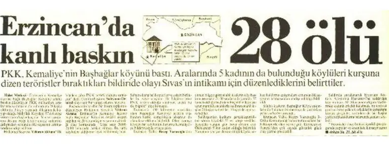
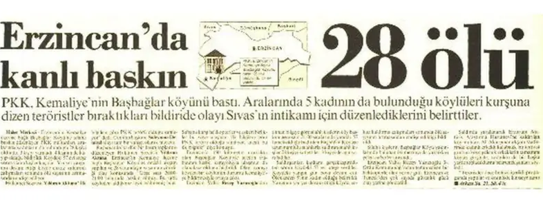

.png)
 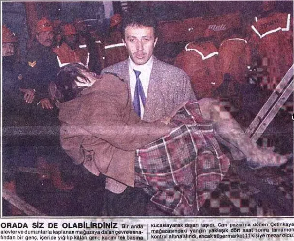
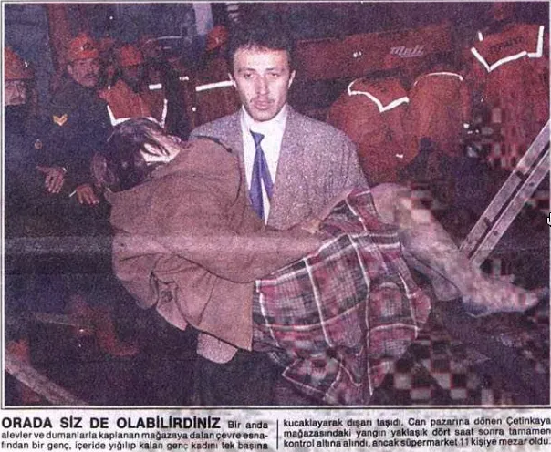
.png)
 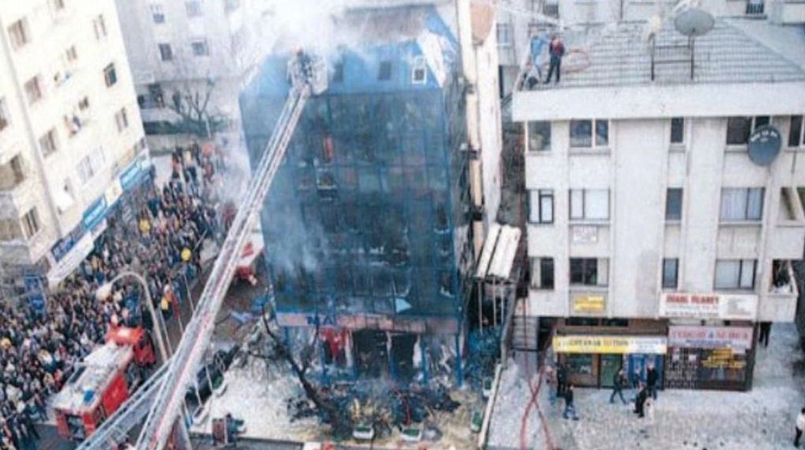
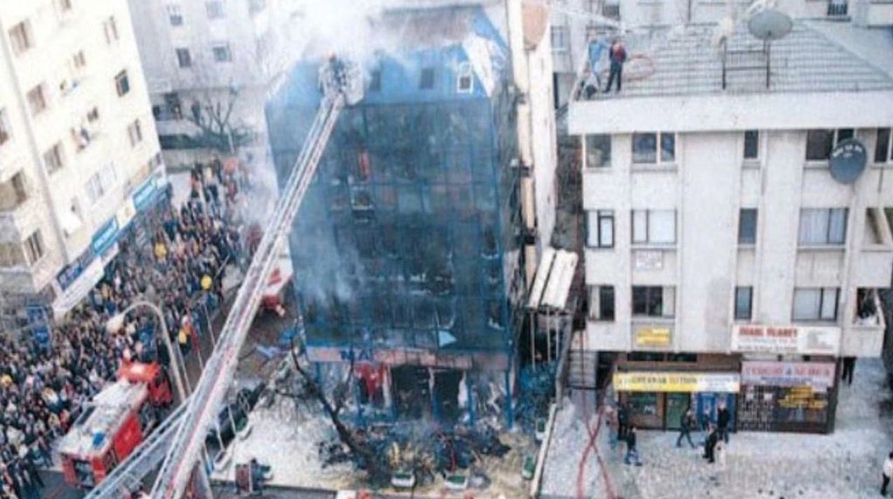
 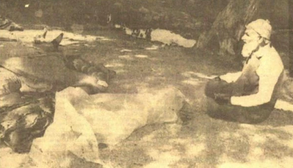
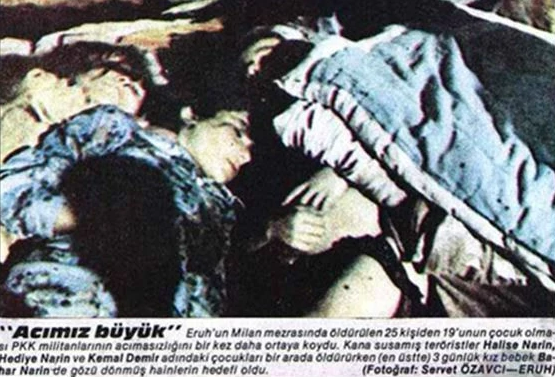
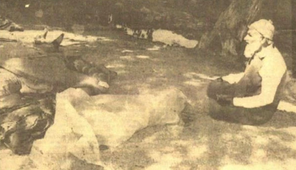
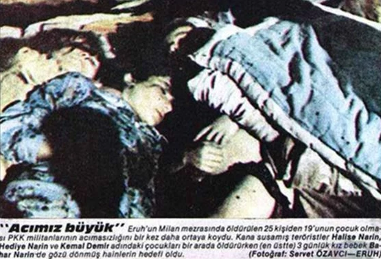
.png)


 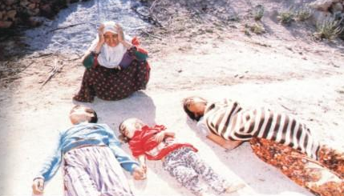
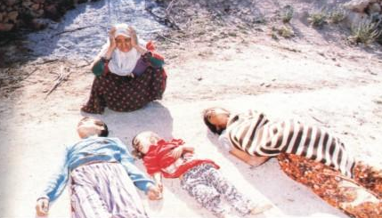

.png) 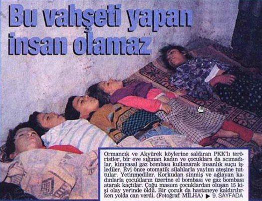
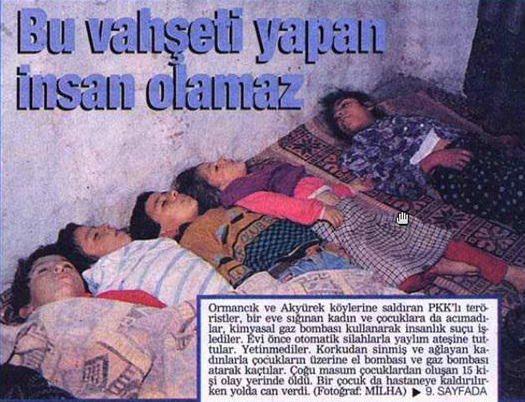

.png)


 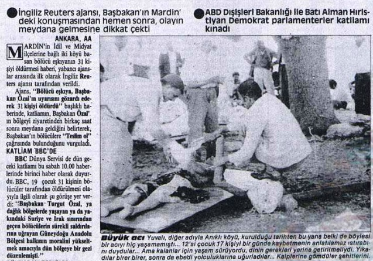
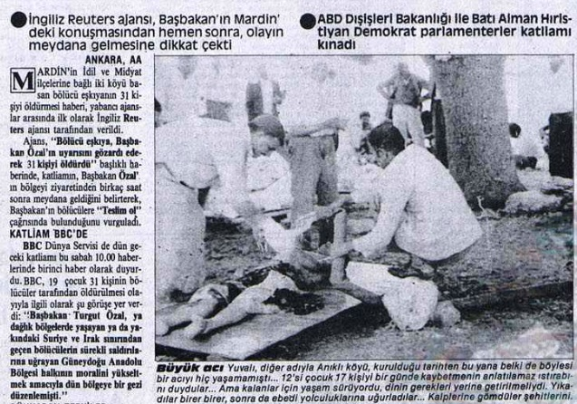
The topic on PKK is a sensitive one, especially if you do not know what are you talking about or don’t know the history
behind it. The reason why I called my punkzine “lumpen left” has double meaning, the first lumpen left who are people
supporting organisation without knowing their history and just doing it in the sake of aesthetic reasons.
(CLICK TO READ MORE)
The second meaning is actually towards pkk itself. It has no connection or relation towards communism, socialism or anarchist ideologies. I wanted to showcase why they are not but also I wanted to show how they emerged. You would probably say massacres on kurdish people but it is way much deeper. In order to tell I want to show 3 main massacres happened in Turkey agains acadmics, leftists, students and many minority groups.
Lumpen Left
Hover me
I will talk about 16th march, bloddy may, maraş massacre and fascist group called ülkücü which were supported by west.
These all led to the foundation of PKK which at first it was rightous but after couple years it started to turn into terrorism cause
they were not citing the worker propblem but they were focusing on identity politics. Cause of the massacres they did in Turkey, we never accept them
as a freedom fighter or something but that does not mean we hate kurds or against them. Cause PKK does not represent Kurds!
(CLICK TO READ MORE)
If you keep labeling one ethnicity to one organisation then you can connect germans to nazis, turks to ülkücü group. Therefore be careful with words, they are powerful and destructive.